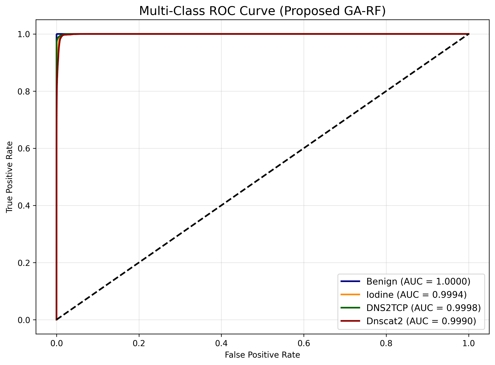

Enhanced Detection of DNS Tunnelling
Leveraging Random Forest and Genetic Algorithm for Improved Security
PhD Candidate: Mahmoud Samour
Supervisors: Ts. Dr. Mohd Fairuz Iskandar Othman & Dr. Aslinda Binti Hassan
Faculty of Information and Communication Technology, UTeM
Presentation Outline
- Introduction: The DNS Threat Landscape
- Problem Statement: The Blind Spot of Encryption
- Research Questions & Objectives
- Literature Review: The Feature Engineering Gap
- Methodology: The GA-RF Framework
- Empirical Results: Beating the Curse of Dimensionality
- Research Contributions & Conclusion
Introduction to the Threat Landscape
Attackers are wrapping malicious tunneling traffic inside encrypted DNS over HTTPS (DoH), effectively bypassing traditional firewalls.

Problem Statement
- DoH Encryption completely blinds Deep Packet Inspection (DPI).
- High Dimensionality: Extracting behavioral features causes severe computational bottlenecks.
- NP-Hard Optimization: Selecting the perfect feature subset is mathematically complex.

Research Questions & Objectives
The Questions
- RQ1: How can we accurately classify Encrypted DNS Tunneling?
- RQ2: How do we extract the most optimal, low-latency feature subset?
The Objectives
- Develop an advanced Random Forest model.
- Select optimal features via Genetic Algorithm.
- Evaluate enhancements in Accuracy and Latency.
Literature Review Gaps
The Current State of the Art
- Deep Learning Models: Act as uninterpretable "black boxes" requiring massive GPU overhead.
- Standard Feature Filtering: Fails to capture non-linear relationships in noisy encrypted data.
- Evolutionary Algorithms: Severely underutilized in DoH threat detection.
Methodology Overview
The research is executed across three rigorous phases.
The Penalty-Based Genetic Algorithm
An adaptive penalty mechanism (λg) mathematically punishes chromosomes that select too many features.
(Crossover & Mutation)
The Enhanced GA-RF Architecture
Integrating surviving features into an optimized Random Forest with XAI (Explainable AI) transparency.

Empirical Results & Metrics
Solving the Curse of Dimensionality
| Metric | Result | Impact |
|---|---|---|
| Weighted F1 Score | 99.84% | Near-Perfect |
| Feature Subset | 10 Features | Down from 32 |
| Training Time | 53% Decrease | Massive Efficiency |
| Per-Packet Latency | 32% Decrease | Real-Time Ready |
The Pareto Frontier (Trade-off Analysis)
Maximizing detection accuracy while utilizing the minimum possible number of features.

Multi-Class Confusion Matrix
Near-zero misclassification across complex tunneling tools like DNScat2 and Iodine.

Ablation Study & Robustness
Removing the explicit DoH-Flag caused only a 0.10% variance, proving true behavioral learning.

Research Contributions
- A Novel Penalty-Based GA: Introducing an adaptive penalty mechanism to perfectly balance accuracy and dimensionality.
- An Enhanced Hybrid Framework: A robust, DPI-free IDS architecture capable of detecting DoH tunneling.
- State-of-the-Art Benchmarking: Establishing a new baseline in the trade-off between operational latency and detection accuracy.
Conclusion & Future Work
This research successfully bridges the gap between high accuracy and computational efficiency in modern cybersecurity.
Future Avenues
- Adapting the GA-RF framework for resource-constrained IoT Networks.
- Testing against polymorphic zero-day tunneling variants.